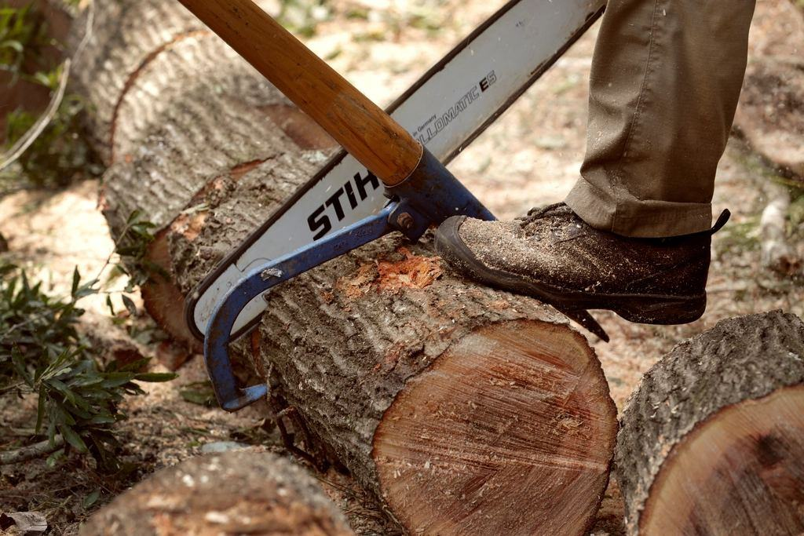
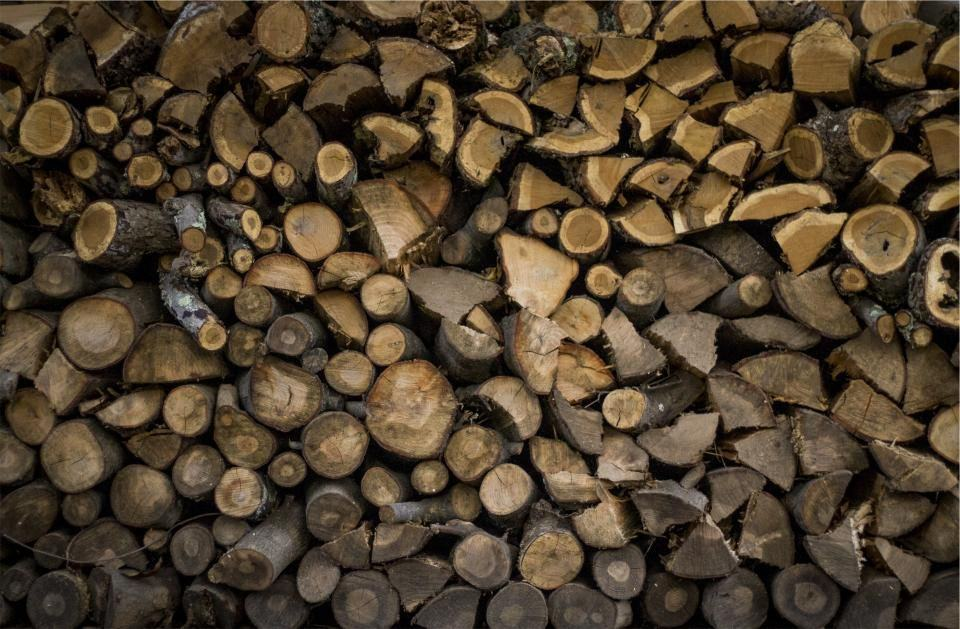

Priser
Vi lämnar alltid fast pris efter en kostnadsfri besiktning.
À-priser som går att budgetera
Inventering brf
Register med foto och åtgärdsklass för föreningens träd.
fr. 9 500 krupp till 50 träd- Mätning och bedömning av varje träd
- Karta och tabell i PDF
- Riskträd flaggas samma dag
- Genomgång med styrelsen
- Vanligast
Skötselplan 10 år
Inventering plus plan och budget för tio år.
fr. 24 000 krupp till 150 träd- Fullständig inventering
- Åtgärder och kostnad per år
- Förnyelseplan för gamla träd
- Uppdatering efter fem år ingår
Fällning och nytt träd
Fällning med flisning och ersättningsträd.
5 800 krper träd upp till 15 m- Riggning och nedfirning nära hus
- Stubbfräsning ingår
- Ersättningsträd 16–18 cm
- Registret uppdateras
Fler priser
| Inventering, per träd över 50 | 95 kr |
|---|---|
| Trädvärdering enligt Alnarpsmodellen | fr. 3 800 kr |
| Trädskyddsplan vid byggprojekt | fr. 14 000 kr |
| Uppbyggnadsbeskärning ungt träd | 480 kr/st |
| Underhållsbeskärning alléträd | fr. 1 900 kr/st |
| Hamling av lind | fr. 1 400 kr/st |
| Nytt träd 16–18 cm, planterat | fr. 6 500 kr/st |
| Arborist med lift | 1 450 kr/tim |
| Bevattningssäck och vattning, per säsong | 850 kr/träd |
Priser exklusive moms. Ramavtalspriser lämnas i anbud.
Från register till utfört arbete
- 1

Startmöte
Vi går igenom förfrågningsunderlag, kartmaterial och befintliga register med beställaren.
- 2
Inventering
Inventerarna mäter och bedömer varje träd i fält. Riskträd flaggas samma dag till beställaren.
- 3

Åtgärdsplan
Data blir en prioriterad lista per år med kostnad per åtgärd enligt avtalets à-priser.
- 4

Utförande och rapport
Lagen utför åtgärderna och varje träd uppdateras i registret med datum, foto och utförare.
Arbetar ni med privatpersoner?
Sällan. Vi är organiserade för kommuner, bolag och föreningar med fler än 30 träd. Villaägare hänvisar vi gärna till kollegor i regionen.
Vilka format levererar ni data i?
Shapefil, GeoPackage, Excel och direkt import till de vanligaste trädregistren. Vi följer SLU:s rekommendationer för trädinventering.
Hur går upphandlingen till?
Vi lämnar anbud på offentliga upphandlingar enligt LOU och kan också ta direktupphandlade uppdrag under gränsen.
Vad är Alnarpsmodellen?
En svensk metod för att värdera träd i pengar utifrån art, storlek, kondition och placering. Den används vid skadestånd och exploatering.
Hur lång tid tar en inventering?
En inventerare hinner 120–200 träd per dag beroende på hur tätt de står. 1 000 träd tar oftast två till tre veckor med rapport.
Kan ni hjälpa till med förfrågningsunderlag?
Ja, vi skriver tekniska beskrivningar för trädskötsel åt kommuner som inte har egen arborist.